Lighting Reference
Overview
In Unreal Engine 3, we place light actors in the world to illuminate our scenes and characters. To manage the behavior of these lights we have created a number of different classes of lights and options to control them. These options give us a very broad spectrum of usage cases ranging from very simple baked lighting to very complex dynamic lighting. The kind of lighting you choose may vary based on the requirements of your project. This guide will serve to explain the various options so that you can understand the limitations and tradeoffs between different lighting options and make the most appropriate choices. We will also attempt to give rough estimates of the performance cost associated with enabling certain options.
Legacy options
The options on this page are accurate but not all relevant anymore. UE3 lighting has undergone several revisions and old lighting options have to be supported to maintain backwards compatibility. For static lighting, the current state of the art is to use DominantLights in conjunction with Lightmass. For moving objects, LightEnvironments are the way to go.
Overview of Light Types and Options
Global Light Properties
Here is a quick rundown of the most common light properties. A pointlight is used as it is the most general case light. Note will be made where an option does not apply to all light types.
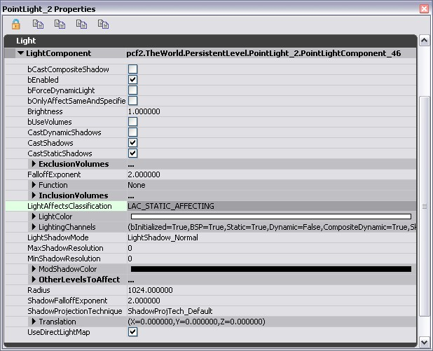
bCastCompositeShadow: This option affects LightEnvironments.
bEnabled: This allows you to toggle a light on and off. Static lights cannot be toggled in game, but this flag is useful to toggle while editing lights if you want to quickly see how much affect it has on the scene.
bForceDynamicLight: Setting this option will preclude any precomputation for that light (no Lightmaps or ShadowMaps), forcing it to be a dynamic light casting stencil shadows. This has no affect for SkyLights. For more about stencil shadows check out the ShadowingReference Document.
bOnlyAffectSameAndSpecifiedLevels: With this option, a light will only affect actors that are in the same streaming level. This is sometimes useful if you want light influences to be per level. You can also add other levels to affect in the OtherLevelsToAffect array.
Brightness: Simply controls the brightness of the light. There is no upper limit to brightness, but we recommend staying below a brightness of 16 for lightmap lights as you will sacrifice range in your lightmaps if the brightness goes much higher.
bUseVolumes: Allows you to Limit a lights influence to within a volume placed in the world. Refer to below for a complete explanation of Light Volumes.
CastDynamicShadows: If a light is affecting dynamic actors, this flag tells the light if it should cast a dynamic shadow or not. It is always better for performance to set this to false. This has no affect for SkyLights.
CastShadows: If set to False, this option will override CastDynamicShadows and CastStaticShadows. If it is set to true, then the other two options will control static and dynamic shadowing. This has no affect for SkyLights.
CastStaticShadows: This tells a light weather or not to cast a shadow from static geometry. It is often useful to disable static shadowing for static fill lights. These are often used to fake bounce lighting. This has no affect for SkyLights.
ExclusionVolumes: This array refers to the option bUseVolumes. Refer to below for a complete explanation of Light Volumes.
FalloffExponent: This allows you to modify the falloff of a light. The default falloff is 2. The smaller the number, the sharper the falloff and the more the brightness is maintained until the radius is reached.
 FalloffExponent has no affect for DirectionalLights or SkyLights.
Function: A LightFunction allows you to modify a light by combining its effect with an emissive material. Refer to below for a complete explanation of Light Functions.
InclusionVolumes: This array refers to the option bUseVolumes. Refer to below for a complete explanation of Light Volumes.
LightAffectsClassification (LAC): We have created a few classifications of lights which are basically just presets of light properties. The classification will draw on the sprite icon to make it easy to spot different light types when flying around a level in the editor (for instance, in the falloff image above, the S on the light icons represents a static light). Refer to below for a complete explanation of LACs.
LightColor: Simply controls the color of a light.
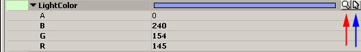
There are three ways to choose a light color:
FalloffExponent has no affect for DirectionalLights or SkyLights.
Function: A LightFunction allows you to modify a light by combining its effect with an emissive material. Refer to below for a complete explanation of Light Functions.
InclusionVolumes: This array refers to the option bUseVolumes. Refer to below for a complete explanation of Light Volumes.
LightAffectsClassification (LAC): We have created a few classifications of lights which are basically just presets of light properties. The classification will draw on the sprite icon to make it easy to spot different light types when flying around a level in the editor (for instance, in the falloff image above, the S on the light icons represents a static light). Refer to below for a complete explanation of LACs.
LightColor: Simply controls the color of a light.
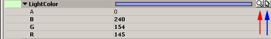
There are three ways to choose a light color:
- Manually enter the color values for R G B. These values range from 0 through 255.
- Use the color picker (button above the red arrow).
- Pick a color from an editor viewport (button above the blue arrow).
LightingChannels: We use lighting channels to control the influences between lights and primitives. This functionality replaces the previous light exclusion functionality. Refer to below for a complete explanation of Lighting Channels.
LightShadowMode: This option allows you to pick between regular shadowing and modulated shadowing for a dynamic light. ModulatedShadows allow for a dynamic shadow to be cast even on a completely Light-Mapped surface.
Refer to the ShadowingReference for a complete explanation of the various types of dynamic shadowing and how to choose between them. This has no affect for SkyLights.
ModShadowColor: If using modulated shadows, this controls the shadow color. Refer to the ShadowingReference and ModulatedShadows for a complete explanation of the various types of dynamic shadowing and how to choose between them.
OtherLevelsToAffect: This option refers back to bOnlyAffectSameAndSpecifiedLevels. If bOnlyAffectSameAndSpecifiedLevels is true, lights will also affect levels which are added to the OtherLevelsToAffect array.
Radius: This controls the maximum radius of a light. Radius has no affect for DirectionalLights or SkyLights. SpotLights use radius but they also have additional options to control cone and falloff, which work in tandem with the radius.
ShadowFalloffExponent: This works just like the FalloffExponent, but this controls the falloff of a modulated shadow. Refer to ShadowingReference for a complete explanation modulated shadows and how you might use this option.
ShadowProjectionTechnique: This chooses the shadow buffer filtering method for the current light. See ShadowBufferFilteringOptions for more info.
Translation: This allows the light source to be translated away from the actual light actor in relative units. This is in place to allow coders to modify a light source, there is no real reason for a content person to modify the translation of a light.
UseDirectLightMap: If this is set to true, the light will be baked into a lightmap for all static primitives it affects. Lightmaps are the cheapest kind of lighting in UnrealEngine3. At E3 2006, both Gears of War and UT2007 exclusively used lightmaps for the static parts of the environments. Refer to below for a complete section on lightmaps and the tradeoffs you make to choose them.
PointLight
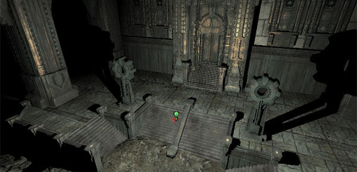
A PointLight is a light that illuminates in all directions, radiating from a point in space.
In the actor browser, you will see there are three different classes for pointlight. Regular PointLights cannot be moved or toggled ingame; they are completely static. Thankfully, we have two additional classes which provide this functionality as needed.
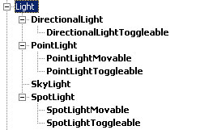
PointLightMovable
The same as a regular PointLight but you can move its location ingame using matinee. To do this, simply hook up the PointLight to a group in Matinee and create a float property track for it. You can also toggle a PointLightMovable on and off ingame using kismet. A PointLightMovable cannot use Lightmaps.
PointLightToggleable
This is the same as a regular PointLight but you can toggle it on and off ingame using kismet. You cannot move a PointlightToggleable ingame. A PointLightToggleable cannot use Lightmaps.
Spotlight
A SpotLight is a directional cone of light.
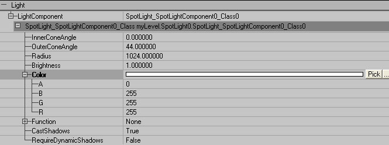
InnerConeAngle
This determines the angle in degrees from the center for the "hot spot" of the SpotLight. Default is 1.0 degrees. The Maximum is 89.0 degrees.
Brightness is consistent throughout the hot spot, then fades off to the end of the light's effect. This is illustrated below. The top SpotLight has an InnerConeAngle of 0 degrees, which results in a smooth gradation from bright (center of light's effect) to dark (edge of light's effect). The bottom SpotLight has in InnerConeAngle of 40 degrees, which results in a light effect that is consistently bright for most of the effect and fades off quickly at the edges.
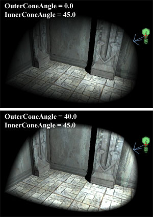
OuterConeAngle
This determines the angle in degrees from the center of the SpotLight to the outer edge of the light's effect . Default is 44.0 degrees. The maximum is 89.0 degrees.
Note: If the OuterConeAngle is less than the InnerConeAngle, the resulting light will have a sharp crisp edge.
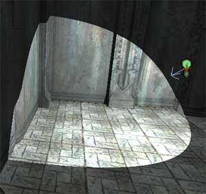
Radius
This determines the distance of the reach of the SpotLight. Default is 1024.0.
The diagram below helps illustrate the relationship of the SpotLight properties:
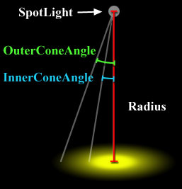
In the actor browser, you will see there are three different classes for SpotLight. Regular SpotLights cannot be moved or toggled ingame; they are completely static. Thankfully, we have two additional classes which provide this functionality as needed.
SpotLightMovable
The same as a regular SpotLight but you can move its location ingame using matinee. To do this, simply hook up the SpotLight to a group in Matinee and create a float property track for it. You can also toggle a SpotLightMovable on and off ingame using kismet. A SpotLightMovable cannot use Lightmaps.
SpotlightToggleable
This is the same as a regular SpotLight but you can toggle it on and off ingame using kismet. You cannot move a SpotLightToggleable ingame. A SpotLightToggleable cannot use Lightmaps.
DirectionalLight
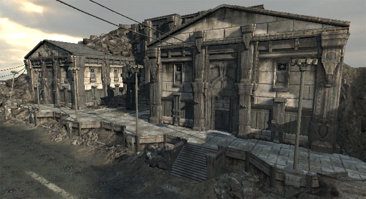
A DirectionalLight is a light source that emits parallel rays of light in a specific direction. DirectionalLights simulate the light from the sun or other heavenly bodies (such as the moon).
Note: A DirectionalLight points directly downward by default. This default angle can cause z-fighting with objects and their shadow volumes. Even if you are lighting for high noon, you should rotate your sun a few degrees to avoid this.
In the actor browser, you will see there are two different classes for DirectionalLight. Regular DirectionalLights cannot be moved or toggled ingame; they are completely static. Thankfully, we have an additional class which provides this functionality as needed.
DirectionalLightToggleable
This is the same as a regular DirectionalLight but you can toggle it on and off ingame using kismet. You cannot move a DirectionalLightToggleable ingame. A DirectionalLightToggleable cannot use Lightmaps.
Skylight
A SkyLight is a hemispherical light source (imagine a hemisphere around and above your map shining inward) that simulates the scattering of light from the sky. It cannot be rotated. It does not cast shadows.
It is possible to create a character-only skylight using Lighting Channels. This is a relatively cheap and easy way of giving your character a constant ambient color so that you don't have to place as many character fill lights as pointlights in the world.
LightingChannels
Lighting Channels replace the previous `Light Exclusion' functionality that allowed you to exclude a light from a primitive on a per-object basis.
We use lighting channels to control the influences between all lights and primitives. Both lights and primitives share the same Lighting Channel options. Here is what the LightingChannels look like for lights (located under LightComponent.LightingChannels):
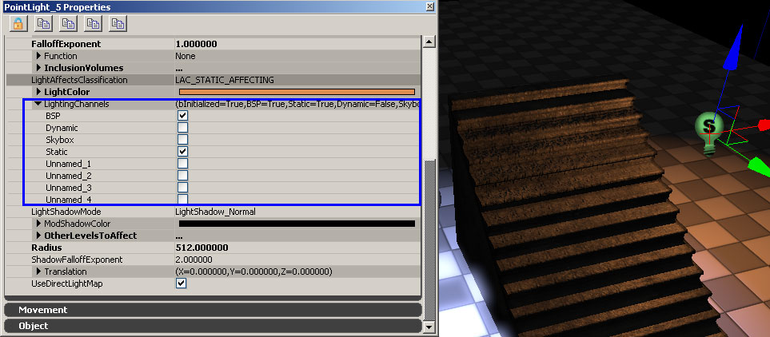
Here is what the LightingChannels look like for static meshes (located under StaticMeshComponent.Lighting.LightingChannels):
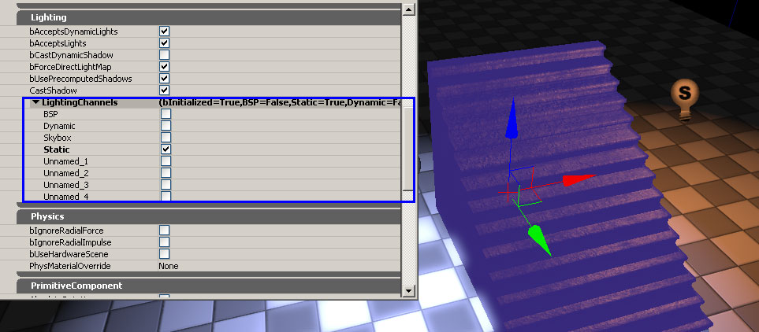
Anytime there is an overlapping channel between a light and a primitive, the light will affect the primitive. It does not matter if there is one channel overlap or all 8 channels overlapping.
These are the default Lighting Channel settings for various primitives:
BSP is only in the BSP channel and this cannot be modified.
Static Meshes default to being in the Static Channel.
Dynamic actors (characters, rigid bodies, interpactors, etc) default to being in the dynamic channel.
The rest of the lighting channels are unused by default and are available to use for multiple lighting setups. For instance, one trick that we use sometimes is to put all foliage in one of the unnamed channels, and then add a directional light to the level which is only in that unnamed lighting channel and is set to not cast shadows. This directional light can then be used to modify the color of the foliage in the level.
To illustrate the affect of lighting channels, look at the image below. In this image, the blue light on the left is only in the BSP channel, while the orange light on the right is in both the BSP and Static lighting channels. Notice that the BSP floor is receiving both lights, while the static mesh is only receiving the orange light since it is a static mesh and only in the static channel.
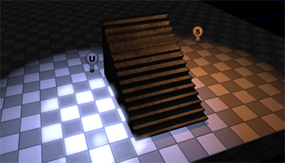
LightAffectsClassification
Lights now have a: Light Affects Classification. An LAC is a set of "presets" that are applied to a light's LightComponent. So instead of manually setting light flags (e.g. CastDynamicShadows) you now simply:
1 Select the light
1 Right click
1 Set what this Light Affects and then choose one of the options on that menu. (Affecting only Dynamic Objects, Affecting only Static Objects, Affecting both Dynamic and Static Objects )
The light will now be set to the flags which are appropriate for that that type of light for that specific classification.
The high level idea here is to have the defaults for lights be performance friendly and make sense for what that light is commonly utilized for.
Lights are now broadly categorized into the following sets:
0) Lights which affect Dynamic Primitives in the world. ( characters, movers, vehicles, physic objects bouncing around, projectiles )
1) Lights which affect Static Primitives in the world. ( static meshes that have been placed, BSP which has been placed )
2) Lights which affect both Dynamic and Static Primitives in the world.
3) Lights which the user has set flags which do not match any of the above.
Each of the above categories is shown via a Letter on the Light Sprite Icon in the editor.
Affects Dynamics: D
Affects Statics: S
Affects Dynamics and Statics: D/S
User Selected: U
A nice way to think about lights is the following:
How cast light Light Mobility / OnOffness What it Affects
Directional Stationary UserSelected
Point Toggleable Dynamics
Spot Moveable (implies toggleable) Statics and DynamicsAndStatics
Those three categories map directly to the types of lights one places in a level.
With the new LAC settings the goal is to look at a level and see:
-LOTS of S classified lights. These are the lights one uses to light the level for basically no performance cost as the lighting is baked into the level.
-1-2 DynamicAndStatic affecting lights per "scene" (these will probably be your directional lights which represent the sun or the major light source which is "tying" the scene together)
-a small number of D classified lights per "area" which are small radius / cone and there for the doing nice window lighting, or computer screen glow
-a number of U classified lights where there was a special need to go away from the norm.
Light Functions
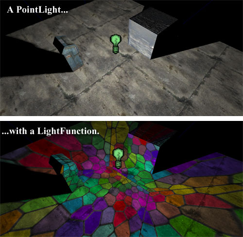
A LightFunction allows you to modify your light by combining its effect with an emissive material. For more on material creation take a look at the MaterialsTutorial. The material is projected by the light in the same manner in which it projects light--PointLights project in all directions, SpotLights project the material in a cone, etc. This flexible technique can be used to create all manner of effects from disco ball reflections to light shining in from a stained-glass window.
Note: If the material used does not have an emissive component, the light will go black.
Note: For a material to work as a light function, it must have bUsedAsLightFunction=True set in the material properties.
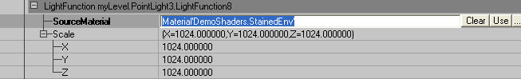
Clicking "New" under Function will bring up two new properties:
Note: In the past light functions usually got cut because they cost too much GPU time. Most of the cost is overhead based on the number of lights with a normal shadow or light function active. With dominant lights, we are already paying this overhead so the only extra cost of having a light function is applying the light function material to the screen. If you have a simple material with 1 or 2 texture lookups this takes about 1ms, so it is fairly cheap (this is about how much one layer of height fog costs, or 1/3rd of SSAO). A light function on a normal light costs the 1ms to apply the material plus a per-light overhead of about 1.5ms.
SourceMaterial
This is the material to be applied to the light. Select it in the GenericBrowser and hit "Use."
Scale
The material can be scaled in the X, Y, and Z dimensions.
Generally you use the LightVector expression in the material editor to do mapping. For point lights, just use LightVector to index into a cube map. For spot lights, people usually use (LightVector.rg/LightVector.b+1)/2 to index into a 2d texture, although this doesn't take the spot light's cone angle into account, and some further fudging will be required. For directional lights, you may want to try using the TextureCoordinates expression.
Lightmaps
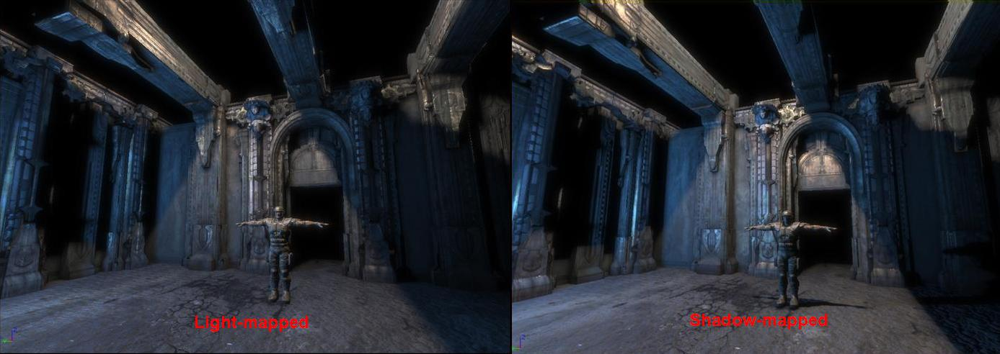
Light-maps can be used to approximate the effect of many lights on a surface with constant storage size and rendering time. Lightmaps in Unreal Engine 3 still take advantage of the normal map and specular qualities in a material, but lighting is baked as generalized from three directions.
| | Shadow-maps | Light-maps |
| Rendering | A primitive is re-rendered for each shadow-mapped light affecting it | All light-mapped lights affecting a primitive can be rendered in a single pass |
| Storage | A separate shadow-map is stored for each light affecting a primitive | A single light-map is stored for each primitive |
| Dynamic shadows | Yes | No |
Because a light-map doesn't keep each light's effect on the primitive separate, it cannot mask out individual lights with dynamic shadows cast by that light. Because of this, light-maps should only be used on lights which don't cast dynamic shadows.
The recommended way to use light-maps is to have only the brightest lights in a scene use shadow-maps and dynamic shadows, and use light-maps for all the secondary lights in the scene.
LightComponent.UseDirectLightMap
If a light has UseDirectLightMap=True, the light reaching a primitive directly from the light will be stored in the primitive's light-map. The default is True for static lights.
PrimitiveComponent.bForceDirectLightMap
If a primitive has bForceDirectLightMap=True, all lights hitting the primitive will behave as if they had UseDirectLightMap=True set. This is useful as an optimization for primitives where the difference between shadow-maps and light-maps isn't noticeable even for the brightest lights. The default is true.
LightVolumes
Light volumes allow you to restrict a light to only influence actors that are within certain volumes (inclusion volumes), or restrict a light from affecting actors in certain volumes (exclusion volumes). For this to work, bUseVolumes must be True.
There are two cases that slightly change the way LightVolumes work.
1) If a light has bUseVolumes true and only has volumes listed under the InclusionVolumes array, then the light will be restricted within those volumes and will not affect actors that are outside of those volumes.
2) If a light has bUseVolumes true and only has volumes listed under the ExclusionVolumes array, then the light will be restricted to affect actors everywhere except within those volumes.
In the following example image, the pointlight has bUseVolumes=True and then lists one volume under InclusionVolumes. This volume is just around the light, but the bottom of the volume extends to below the BSP floor. After rebuilding lighting, notice how the static mesh is not receiving any light, even though it is clearly within the radius of the pointlight. Since the volume extends below the BSP floor, the BSP is included in the lights influence.
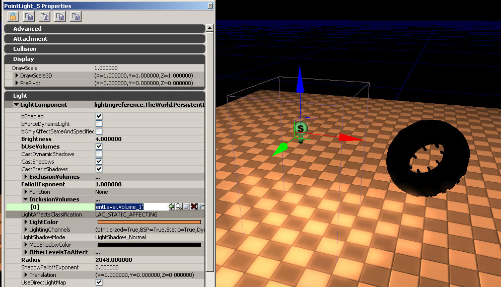
Light Volumes are applied on top of any existing Lighting Channel settings.
Primitive Lighting Options
Most of this guide has focused on settings associated with Light Actors, but Primitives have important lighting options as well.
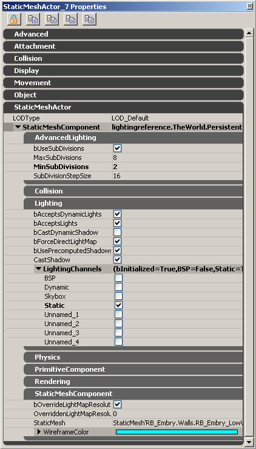
bAcceptsDynamicLights: This determines weather or not a primitive will receive dynamic lights during the game. An example of this would be the muzzle flash of a gun illuminating the scene. You might opt to set this to be false for small decorative objects in order to optimize the dynamic lighting in your game.
bAcceptsLights: Turning this off will make an object receive no lighting, regardless of any other options. This should be set to false for static meshes that use only unlit materials.
bCastDynamicShadow: If this is true, a static mesh will cast a dynamic shadow. This includes casting a dynamic shadow onto players. This defaults to false for performance reasons.
bForceDirectLightMap: If this is true, all lights affecting this primitive will be converted into lightmaps. This is the most performance friendly option and the default is true for performance reasons.
bUsePrecomputedShadows: If this is set to false, the static mesh will not rebuild lighting and will be considered dynamic. This should never be set to false unless you have a very special case and know exactly what you are doing. The default is true.
CastShadow: This determines weather or not a static mesh will cast a shadow. If this is false, it will override CastDynamicShadows.
bOverrideLightMapResolution: If this is set to true, then the field below (OverriddenLightMapResolution) will override the lightmap resolution specified for a given static mesh in its properties. Note that this refers to the static mesh properties as accessed by double clicking the static mesh in the Generic Browser. If this is false, then the static meshes default lightmap resolution will by used. The default is true.
OverriddenLightMapResolution: if bOverrideLightMapResolution is true, then this number is used to determine the resolution used for rendering either a LightMap or a ShadowMap for the static mesh. If this is set to 0 vertex lighting will be used. The default is 0 for memory reasons.
Lighting Subdivisions
In Unreal Engine 2, all static meshes used vertex lighting. With low polygon objects, vertex lighting often introduces unsightly artifacts if a single vertex happens to be completely shadowed by a thin object (such as a wire).
Unreal Engine 3 addresses this issue by subdividing the lighting traces on objects. This prevents harsh shadow bugs. These settings only take effect when lighting is rebuilt. The more subdivisions you use, the longer rebuilding lighting will take.
bUseSubDivisions: Defaults to True. If this is false, none of the other AdvancedLighting options will have an effect.
MaxSubDivisions: Specifies the maximum number of SubDivisions that will be traced when building lighting for a static mesh.
MinSubDivisions: Specifies the minimum number of subdivisions that will be traced when building lighting for a static mesh.
SubDivisionStepSize: The amount of subdivisions used is biased by the size of the mesh (or rather, distance between vertices). This sets the step size in unreal units for lighting traces. By default, the step size is 16, so a very small mesh will be clamped by the MinSubDivisions, and a very large mesh will subdivide to the amount specified by MaxSubDivisions.
There are some cases where you might wish to disable subdivisions altogether. A case that comes to mind is in the use of vertex lighting for modular meshes. In this example, the lighting between these modular wall sections must be seamless, but because there is a large shadow affecting the majority of the wall section on the left, subdivisions are averaging that shadow across the mesh. This is a rather extreme example as using a fairly low resolution lightmap in this case fixes the problem and maintains the shadow.
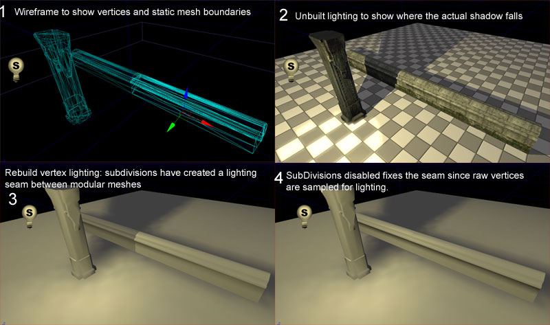
Primitive Lighting Channels
Refer to the Lighting Channels Section above for a description of these options.
Moving Lights And What Occurs
When you move a light which is accumulating light into a lightmap OR if your move an object which was lightmapped, then the lightmap(s) which were being affected will be replaced and you will see the scene as if you have not rebuilt lighting. (e.g. You have a desk with a Direct Light mapped lamp on it. Moving that lamp will invalidate the lightmap and then update in real time so you can see a good approximation of it instead of having to rebuild lighting.) This increases iteration time for the content teams.
Important!
You are viewing documentation for the Unreal Development Kit (UDK).
If you are looking for the Unreal Engine 4 documentation, please visit the Unreal Engine 4 Documentation site.